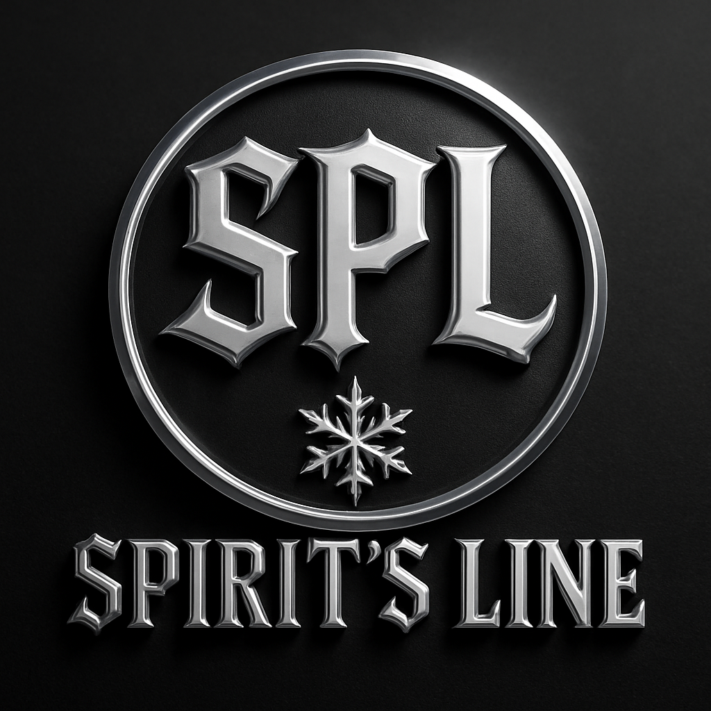

Table of Contents — Conditions d’utilisation
1. Objet et Acceptation des Conditions
2. Description des Services
3. Accès au Site
4. Utilisation du Site
5. Création et Gestion de Compte (si applicable)
6. Propriété Intellectuelle
7. Contenus Utilisateurs (si applicable)
8. Responsabilités
9. Liens Externes
10. Modifications des Conditions
11. Résiliation
12. Contact
TERMS OF SERVICE – CONDITIONS D’UTILISATION Dernière mise à jour : [16/03/2026]
Bienvenue sur SPL (Spirit’s Line). Les présentes Conditions d’Utilisation régissent l’accès et l’utilisation de notre site, de nos services et de nos contenus numériques. En accédant au site, vous acceptez sans réserve ces conditions.
1. Objet et Acceptation des Conditions
Les Conditions d’Utilisation définissent les règles encadrant l’usage du site SPL.
En utilisant le site, vous reconnaissez :
avoir lu et compris les présentes conditions,
les accepter sans restriction.
Si vous n’acceptez pas ces conditions, vous ne devez pas utiliser nos services.
2. Description des Services
SPL propose :
des contenus technologiques et informatiques,
des services numériques, d’assistance et de création,
des guides, ressources et supports pédagogiques,
des prestations liées à la communication digitale.
Nous nous réservons le droit de modifier, ajouter ou retirer des fonctionnalités à tout moment.
3. Accès au Site
Nous mettons tout en œuvre pour maintenir le site accessible. Toutefois, nous ne garantissons pas :
l’absence d’interruption,
l'absence d’erreurs,
la disponibilité continue du service.
Nous pouvons suspendre, limiter ou arrêter l’accès au site, notamment pour maintenance.
4. Utilisation du Site
Vous vous engagez à utiliser le site dans le respect :
des lois en vigueur,
de l’ordre public,
de nos règles internes.
Il est strictement interdit de :
copier nos contenus sans autorisation,
usurper l’identité d’autres personnes,
tenter d’accéder aux fonctionnalités internes du site,
utiliser le site à des fins frauduleuses.
5. Création et Gestion de Compte (si applicable)
Si SPL propose un système de compte, vous êtes responsable de :
votre mot de passe,
la confidentialité de vos accès,
les actions réalisées via votre compte.
SPL ne peut être tenu responsable d’un usage non autorisé de votre compte.
6. Propriété Intellectuelle
Tous les éléments du site SPL sont protégés par les lois sur la propriété intellectuelle :
logos, design, textes, codes, médias, icônes.
Vous n'êtes pas autorisé à :
reproduire, redistribuer ou revendre nos contenus,
afficher ou exploiter nos marques sans accord écrit.
7. Contenus Utilisateurs (si applicable)
Si vous publiez du contenu via SPL, vous garantissez que :
vous possédez les droits sur ces contenus,
ils ne violent aucune loi ou droit d’auteur.
Vous nous accordez une licence non exclusive pour afficher ces contenus sur SPL.
8. Responsabilités
SPL ne pourra être tenu responsable :
de l’interruption du service,
de la perte de données,
des dommages résultant d’une mauvaise utilisation du site,
des attaques informatiques indépendantes de notre volonté.
Vous utilisez le site à vos propres risques.
9. Liens Externes
Le site peut contenir des liens vers des sites tiers.
SPL n’est pas responsable :
de leur contenu,
de leurs pratiques,
de leurs politiques de confidentialité.
10. Modifications des Conditions
Nous pouvons mettre à jour les présentes Conditions à tout moment.
L’utilisation continue du site vaut acceptation de la dernière version.
11. Résiliation
Nous pouvons suspendre ou résilier votre accès en cas :
de non-respect des conditions,
d’utilisation abusive,
de comportement frauduleux.
12. Contact
Pour toute question concernant les Conditions d’Utilisation :
Notre mail ici📧